홈 화면
오늘 링에 강아지가 들어가고, 산책 시작이 큰 단추가 됐습니다.
전
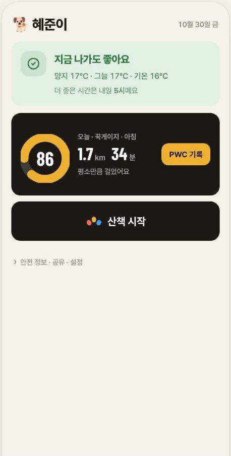
후
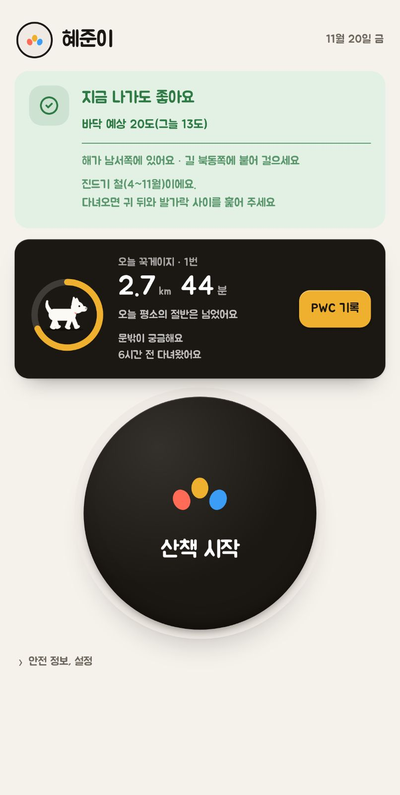
프로젝트 01 / 05앱스토어 출시 · 2026.11.23
오늘 산책이 충분했는지 남의 평균이 아니라 우리 강아지의 평소 기록과 견줘 보여 주는 앱입니다.

지침 v1.0에서 앱스토어 출시까지 석 달입니다.
로고는 9월에 발바닥 세 점으로 정했습니다.
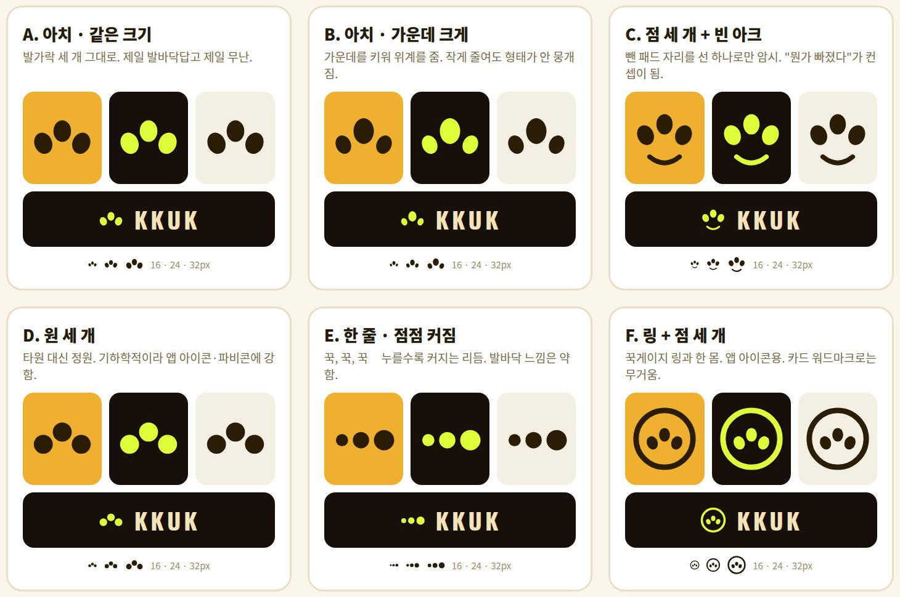
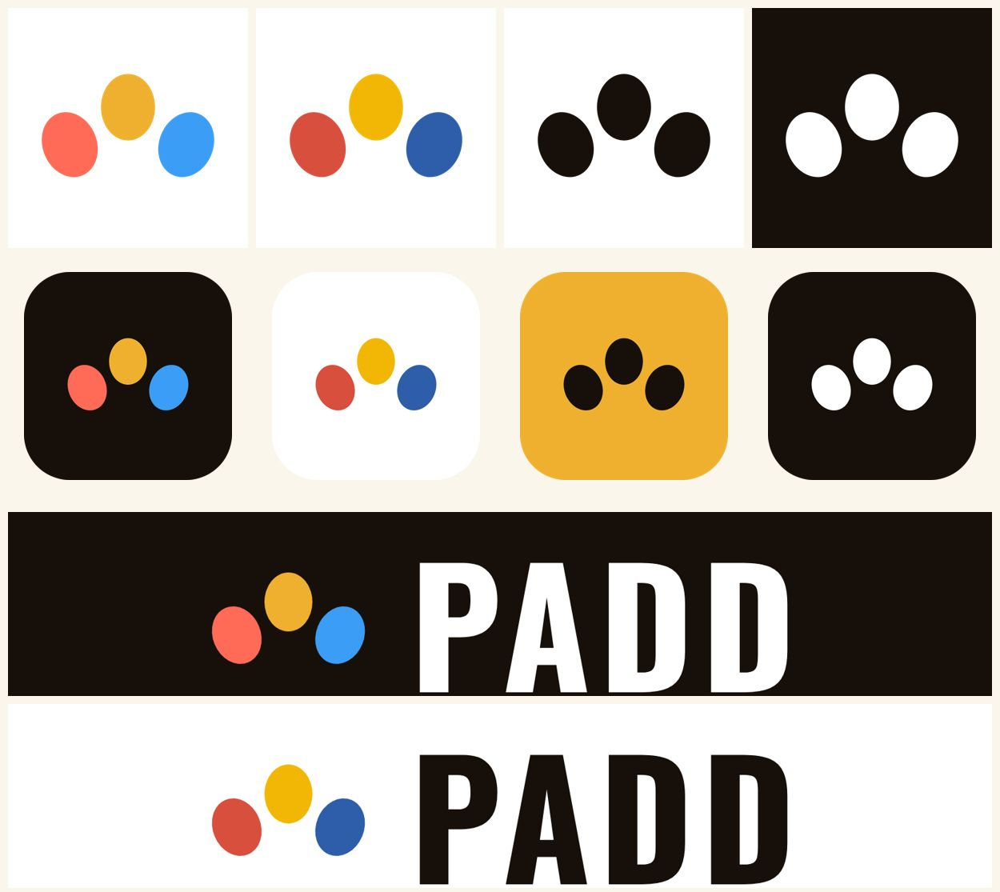
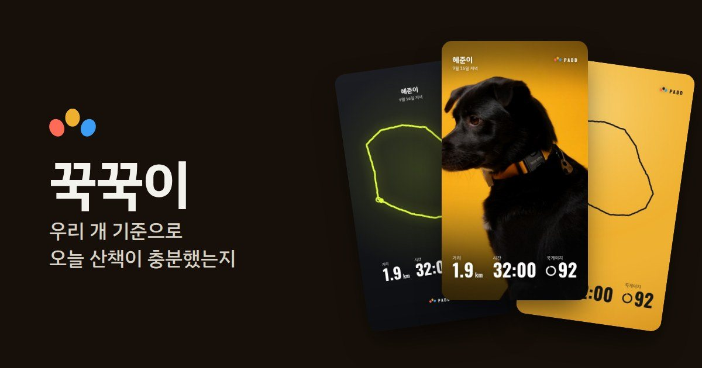
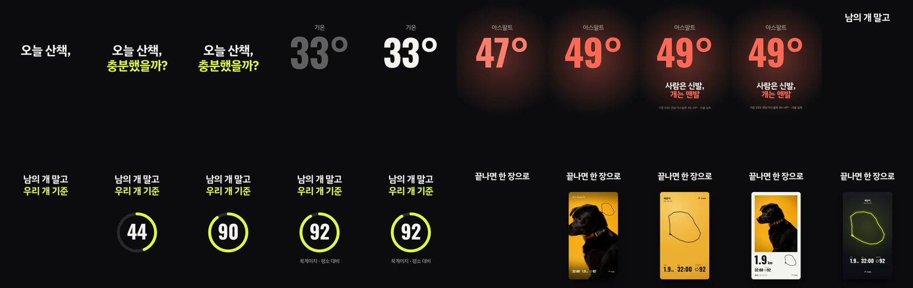
러닝 인증처럼 공유되고 개 사진의 반응도 얻도록 카드를 설계했습니다. 사진 속 강아지는 폰 안에서 오려 냅니다.
근거: 러닝 인증 문화(세계일보, KB Think 2024, Fitt Insider 2023), 반려동물 사진 반응(NewsWhip 2016)
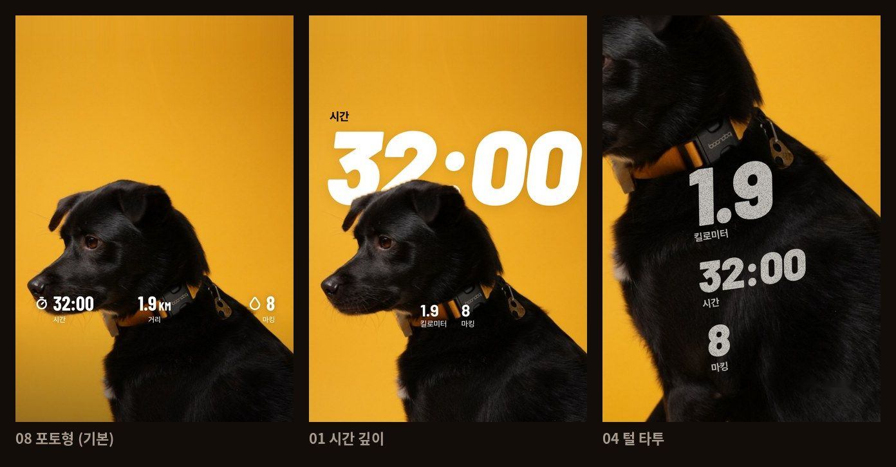
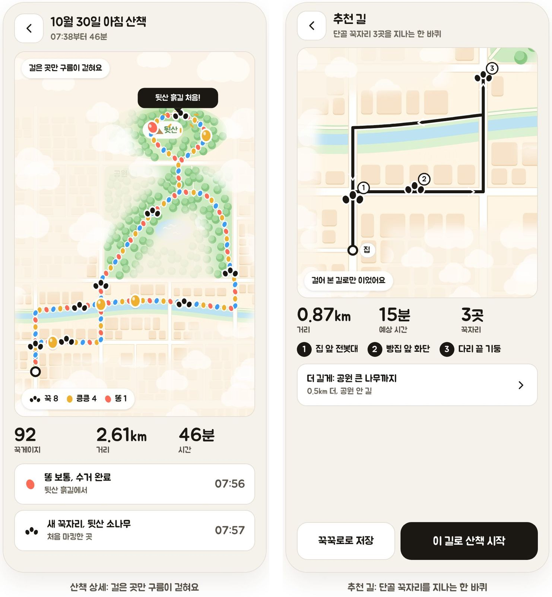
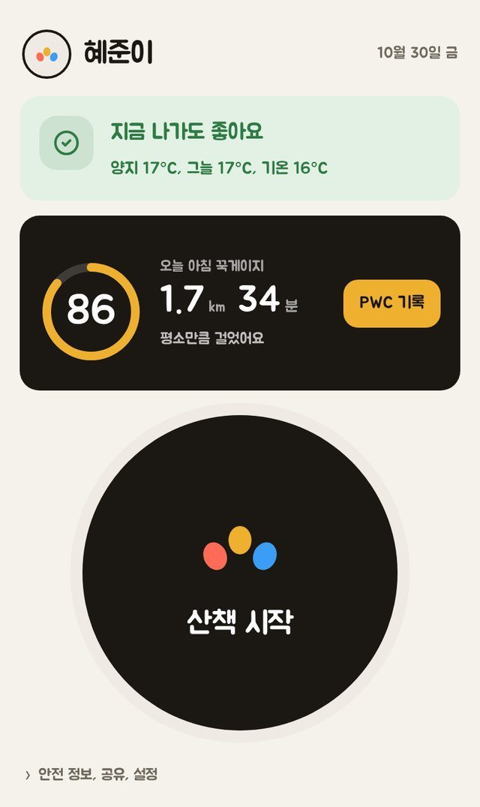
시험 262개를 통과한 뒤 배포했습니다.
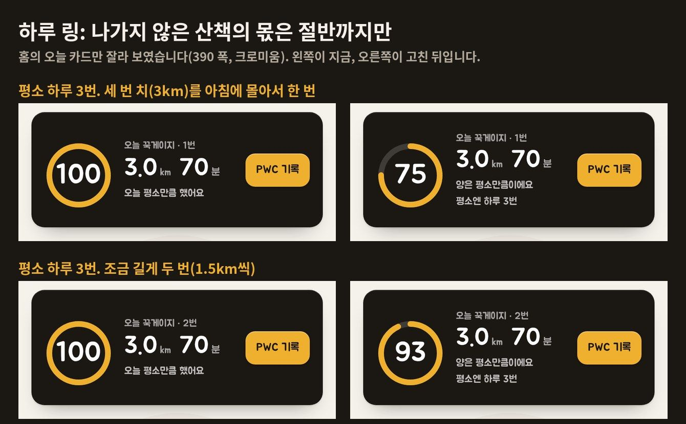
테스터 의견 16건을 6일 안에 모두 배포하거나 결정했습니다.
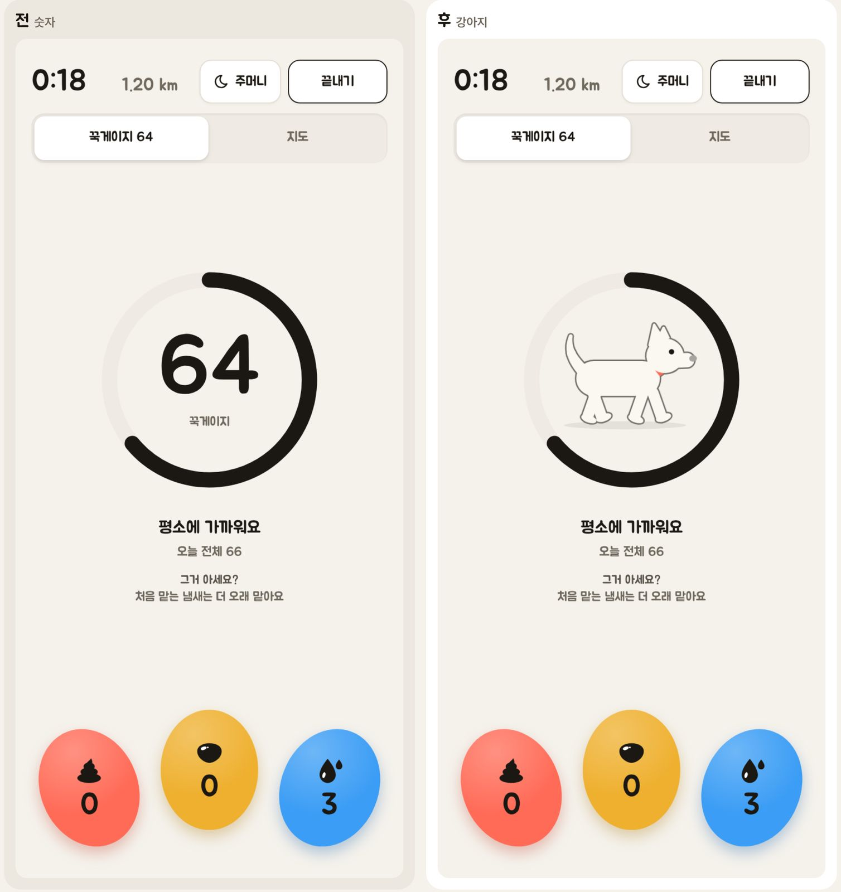
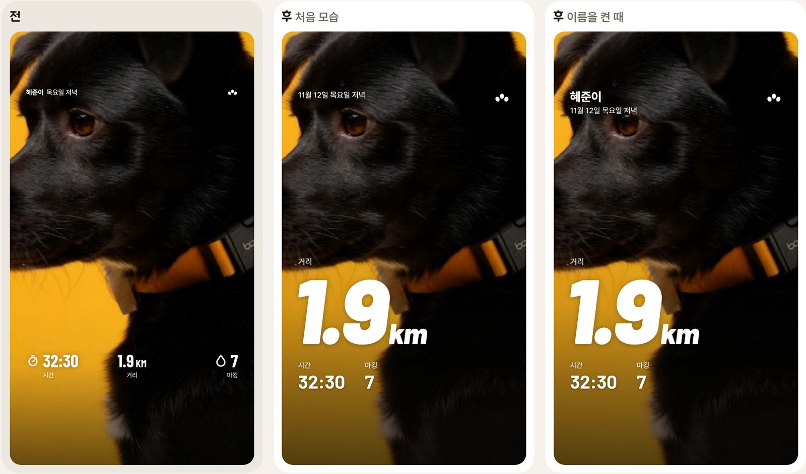
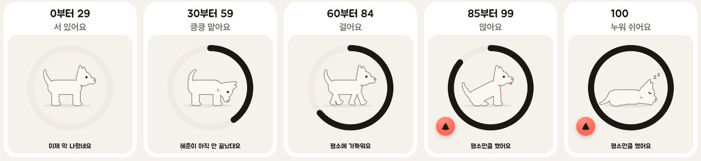
웹과 안드로이드 0.5.1은 다음 날 배포했습니다.
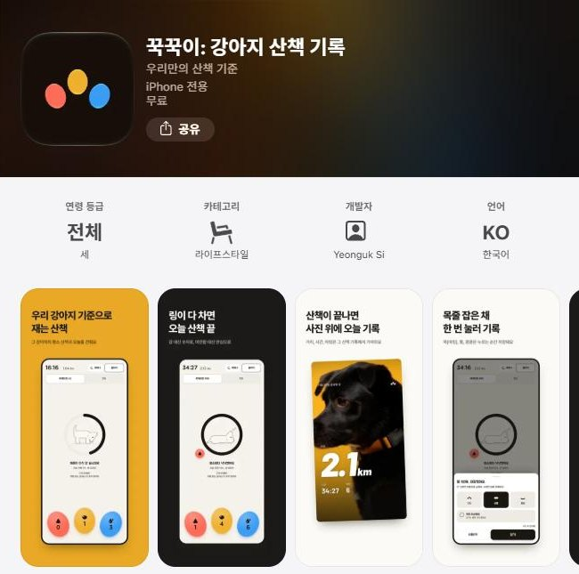
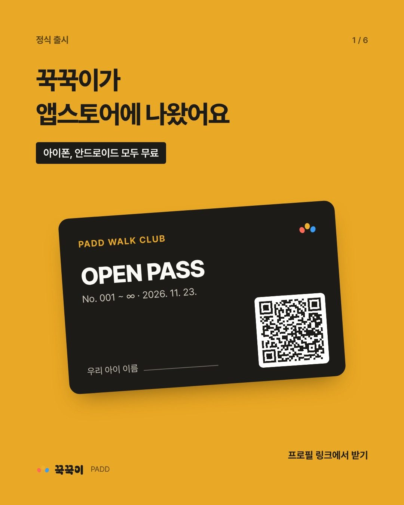
오늘 링에 강아지가 들어가고, 산책 시작이 큰 단추가 됐습니다.
전

후

사진이 화면을 채우고, 보이는 단추는 15개에서 8개로 줄었습니다.
전
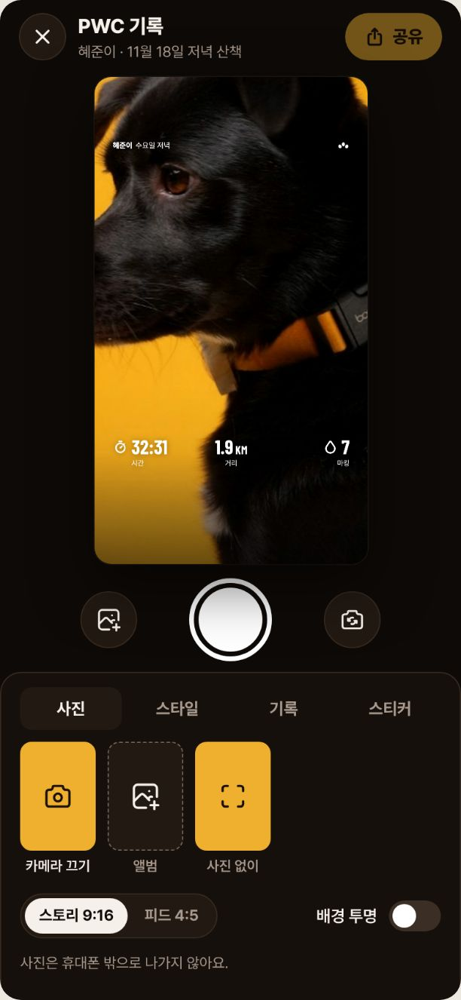
후
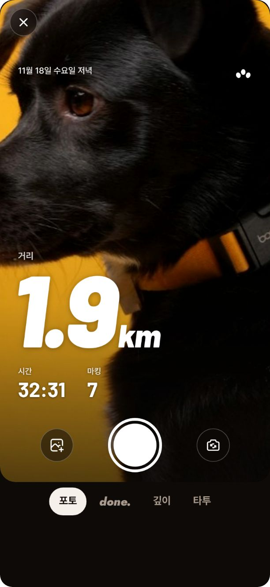
목표나 추정이 아니라 기록에 남은 숫자만 적었습니다.
58건
반영해 배포한 의견
기록에 남은 의견 82건 중
기준
출처 꾹꾹이 의견 기록
1,342개
통과한 자동 시험
31개 파일. 이미 알던 실패 4개는 남아 있습니다.
기준
출처 자동 시험 실행 결과
84건
코드 검토로 찾아 고친 문제
기준
출처 Codex 코드 검토 기록
2.84초
첫 화면이 뜨기까지(LCP)
느린 4G, CPU 4배 느림 조건
기준
출처 첫 화면 성능 측정
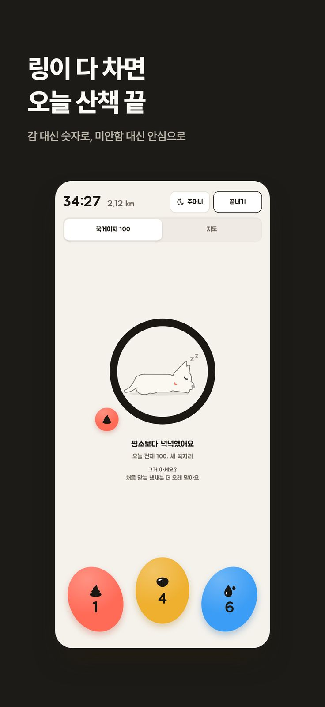
꾹꾹이 받기 페이지 →앱스토어에서 ‘꾹꾹이: 강아지 산책 기록’을 찾으면 됩니다.